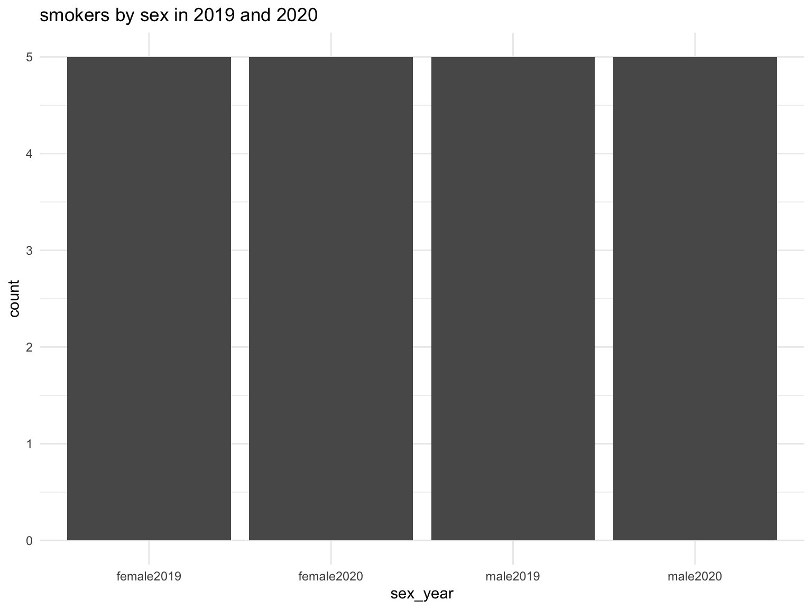
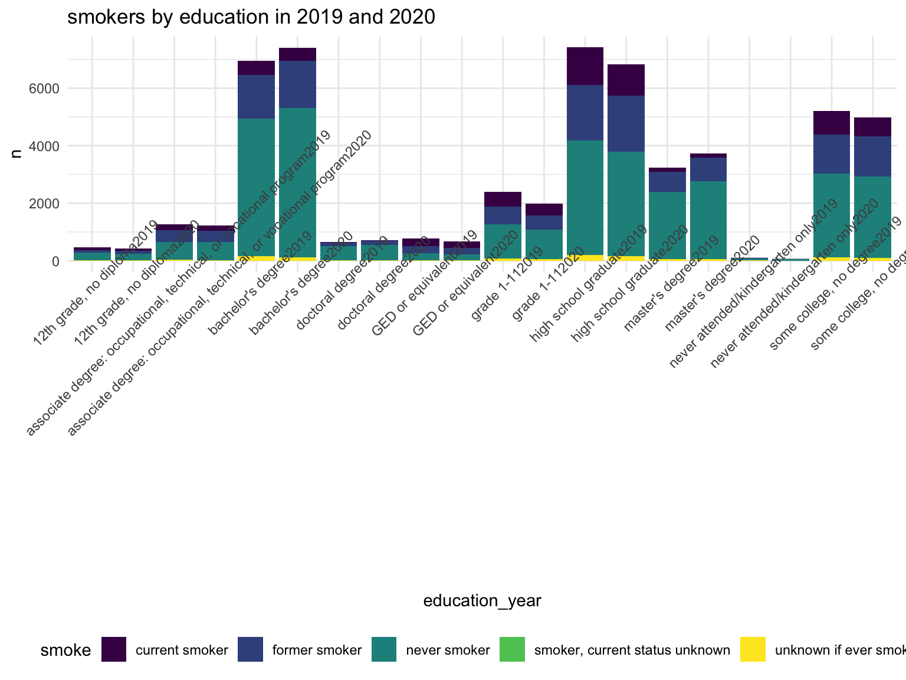
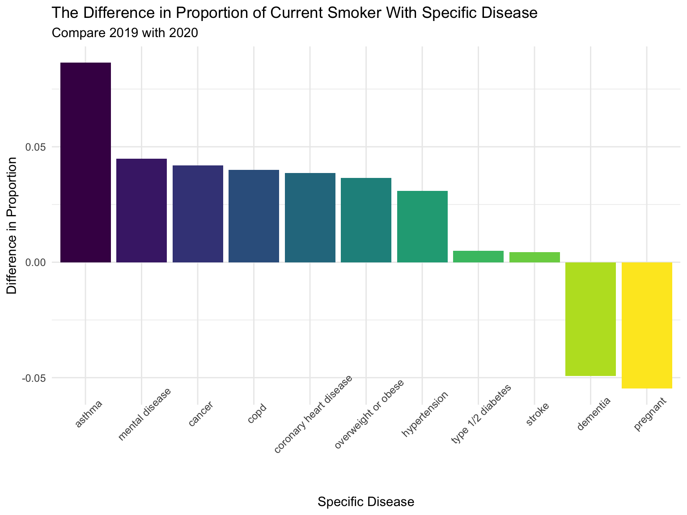

Smoking and Covid-19
Wanxin Qi
12/7/2021
Import and Clean Data From NHIS
adult_19 =
read_csv("data/adult19.csv") %>%
select(SEX_A, AGEP_A, SMKCIGST_A, PHSTAT_A, EDUC_A, ORIENT_A, HISPALLP_A, HISDETP_A, DISAB3_A, BMICAT_A, CANEV_A, DIBEV_A, DIBTYPE_A, DEMENEV_A, CHDEV_A, PREGNOW_A, ASTILL_A, STREV_A, HYPEV_A, COPDEV_A, ANXEV_A, DEPEV_A) %>%
mutate(YEAR = 2019,
HLTHCOND_A = NA
) %>%
relocate(YEAR)
adult_20 =
read_csv("data/adult20.csv") %>%
select(SEX_A, AGEP_A, SMKCIGST_A, PHSTAT_A, EDUC_A, ORIENT_A, HISPALLP_A, HISDETP_A, DISAB3_A, BMICAT_A, CANEV_A, DIBEV_A, DIBTYPE_A, DEMENEV_A, CHDEV_A, PREGNOW_A, ASTILL_A, STREV_A, HYPEV_A, COPDEV_A, ANXEV_A, DEPEV_A, HLTHCOND_A) %>%
mutate(YEAR = 2020) %>%
relocate(YEAR)
adult = rbind(adult_19, adult_20)adult =
adult %>%
janitor::clean_names() %>%
mutate(
sex = case_when(
sex_a == "1" ~ "male",
sex_a == "2" ~ "female",
sex_a == "7" ~ "refused",
sex_a == "8" ~ "not ascertained",
sex_a == "9" ~ "don't know"
),
age = agep_a,
smoke = case_when(
smkcigst_a == "1" ~ "current every day smoker",
smkcigst_a == "2" ~ "current some day smoker",
smkcigst_a == "3" ~ "former smoker",
smkcigst_a == "4" ~ "never smoker",
smkcigst_a == "5" ~ "smoker, current status unknown",
smkcigst_a == "9" ~ "unknown if ever smoked"
),
education = case_when(
educ_a == "0" ~ "never attended/kindergarten only",
educ_a == "1" ~ "grade 1-11",
educ_a == "2" ~ "12th grade, no diploma",
educ_a == "3" ~ "GED or equivalent",
educ_a == "4" ~ "high school graduate",
educ_a == "5" ~ "some college, no degree",
educ_a == "6" ~ "associate degree: occupational, technical, or vocational program",
educ_a == "7" ~ "associate degree: academic",
educ_a == "8" ~ "bachelor's degree",
educ_a == "9" ~ "master's degree",
educ_a == "10" ~ "professional school",
educ_a == "11" ~ "doctoral degree",
educ_a == "97" ~ "refused",
educ_a == "98" ~ "not ascertained",
educ_a == "99" ~ "don't know"
),
race = case_when(
hispallp_a == "1" ~ "hispanic",
hispallp_a == "2" ~ "white",
hispallp_a == "3" ~ "black or african american",
hispallp_a == "4" ~ "asian",
hispallp_a == "5" ~ "aian",
hispallp_a == "6" ~ "aian and other",
hispallp_a == "7" ~ "multiple races",
hispallp_a == "97" ~ "refused",
hispallp_a == "98" ~ "not ascertained",
hispallp_a == "99" ~ "don't know"
),
hispanic_origin = case_when(
hisdetp_a == "1" ~ "mexican",
hisdetp_a == "2" ~ "other hispanic",
hisdetp_a == "3" ~ "not hispanic",
hisdetp_a == "7" ~ "refused",
hisdetp_a == "8" ~ "not ascertained",
hisdetp_a == "9" ~ "don't know"
),
disability = case_when(
disab3_a == "1" ~ "yes",
disab3_a == "2" ~ "no",
disab3_a == "9" ~ "don't know"
),
health = case_when(
phstat_a == "1" ~ "excellent",
phstat_a == "2" ~ "very good",
phstat_a == "3" ~ "good",
phstat_a == "4" ~ "fair",
phstat_a == "5" ~ "poor",
phstat_a == "7" ~ "refused",
phstat_a == "8" ~ "not ascertained",
phstat_a == "9" ~ "don't know"
),
orient = case_when(
orient_a == "1" ~ "gaylesbian",
orient_a == "2" ~ "straight",
orient_a == "3" ~ "bisexual",
orient_a == "4" ~ "else",
orient_a == "5" ~ "unknown",
orient_a == "7" ~ "refused",
orient_a == "8" ~ "not ascertained",
orient_a == "9" ~ "don't know"
),
bmi = case_when(
bmicat_a == "1" ~ "underweight",
bmicat_a == "2" ~ "healthy weight",
bmicat_a == "3" ~ "overweight",
bmicat_a == "4" ~ "obese",
bmicat_a == "9" ~ "unknown"
),
cancer = case_when(
canev_a == "1" ~ "yes",
canev_a == "2" ~ "no",
canev_a == "7" ~ "refused",
canev_a == "8" ~ "not ascertained",
canev_a == "9" ~ "don't know"
),
diabetes_type = case_when(
dibtype_a == "1" ~ "type 1",
dibtype_a == "2" ~ "type 2",
dibtype_a == "3" ~ "other",
dibtype_a == "7" ~ "refused",
dibtype_a == "8" ~ "not ascertained",
dibtype_a == "9" ~ "don't know"
),
dementia = case_when(
demenev_a == "1" ~ "yes",
demenev_a == "2" ~ "no",
demenev_a == "7" ~ "refused",
demenev_a == "8" ~ "not ascertained",
demenev_a == "9" ~ "don't know"
),
heart_disease = case_when(
chdev_a == "1" ~ "yes",
chdev_a == "2" ~ "no",
chdev_a == "7" ~ "refused",
chdev_a == "8" ~ "not ascertained",
chdev_a == "9" ~ "don't know"
),
asthma = case_when(
astill_a == "1" ~ "yes",
astill_a == "2" ~ "no",
astill_a == "7" ~ "refused",
astill_a == "8" ~ "not ascertained",
astill_a == "9" ~ "don't know"
),
stroke = case_when(
strev_a == "1" ~ "yes",
strev_a == "2" ~ "no",
strev_a == "7" ~ "refused",
strev_a == "8" ~ "not ascertained",
strev_a == "9" ~ "don't know"
),
hypertention = case_when(
hypev_a == "1" ~ "yes",
hypev_a == "2" ~ "no",
hypev_a == "7" ~ "refused",
hypev_a == "8" ~ "not ascertained",
hypev_a == "9" ~ "don't know"
),
copd = case_when(
copdev_a == "1" ~ "yes",
copdev_a == "2" ~ "no",
copdev_a == "7" ~ "refused",
copdev_a == "8" ~ "not ascertained",
copdev_a == "9" ~ "don't know"
),
anxiety = case_when(
anxev_a == "1" ~ "yes",
anxev_a == "2" ~ "no",
anxev_a == "7" ~ "refused",
anxev_a == "8" ~ "not ascertained",
anxev_a == "9" ~ "don't know"
),
depression = case_when(
depev_a == "1" ~ "yes",
depev_a == "2" ~ "no",
depev_a == "7" ~ "refused",
depev_a == "8" ~ "not ascertained",
depev_a == "9" ~ "don't know"
),
pregnant = case_when(
pregnow_a == "1" ~ "yes",
pregnow_a == "2" ~ "no",
pregnow_a == "7" ~ "refused",
pregnow_a == "8" ~ "not ascertained",
pregnow_a == "9" ~ "don't know"
),
immune_weaken = case_when(
hlthcond_a == "1" ~ "yes",
hlthcond_a == "2" ~ "no",
hlthcond_a == "7" ~ "refused",
hlthcond_a == "8" ~ "not ascertained",
hlthcond_a == "9" ~ "don't know"
)
)
adult = adult %>%
select(-sex_a, -agep_a, -smkcigst_a, -phstat_a, -educ_a, -hispallp_a, -hisdetp_a, -orient_a, -bmicat_a, -canev_a, -dibev_a, -dibtype_a, -copdev_a, -hypev_a, -strev_a, -astill_a, -chdev_a, -demenev_a, -hlthcond_a, -pregnow_a, -depev_a, -anxev_a, -disab3_a) %>%
relocate(year, smoke, sex, age, orient, education, race, hispanic_origin, disability, health, cancer, asthma, copd, dementia, diabetes_type, heart_disease, hypertention, anxiety, depression, bmi, pregnant, stroke, immune_weaken) %>%
mutate(
diabetes_type = replace(diabetes_type, is.na(diabetes_type), "missing"),
asthma = replace(asthma, is.na(asthma), "missing"),
pregnant = replace(pregnant, is.na(pregnant), "missing"),
immune_weaken = replace(immune_weaken, is.na(immune_weaken), "missing")
)#Making Plot
adult=
adult%>%
mutate(smoke = recode(smoke,"current every day smoker"="current smoker","current some day smoker"="current smoker"))%>%
drop_na()
adult## # A tibble: 63,565 × 23
## year smoke sex age orient education race hispanic_origin disability
## <dbl> <chr> <chr> <dbl> <chr> <chr> <chr> <chr> <chr>
## 1 2019 never… male 97 strai… associate … blac… not hispanic no
## 2 2019 curre… female 28 strai… associate … white not hispanic no
## 3 2019 never… male 72 strai… some colle… white not hispanic no
## 4 2019 never… male 60 strai… associate … hisp… other hispanic no
## 5 2019 curre… male 60 strai… some colle… white not hispanic no
## 6 2019 never… male 78 strai… some colle… blac… not hispanic no
## 7 2019 never… male 32 strai… bachelor's… white not hispanic no
## 8 2019 curre… male 61 strai… high schoo… white not hispanic no
## 9 2019 never… male 28 strai… some colle… white not hispanic no
## 10 2019 forme… male 85 strai… grade 1-11 white not hispanic no
## # … with 63,555 more rows, and 14 more variables: health <chr>, cancer <chr>,
## # asthma <chr>, copd <chr>, dementia <chr>, diabetes_type <chr>,
## # heart_disease <chr>, hypertention <chr>, anxiety <chr>, depression <chr>,
## # bmi <chr>, pregnant <chr>, stroke <chr>, immune_weaken <chr>sex_df=
adult%>%
group_by(smoke,sex,year)%>%
summarise(n=n())%>%
filter(sex%in%c("female","male"))%>%
mutate(sex_year=str_c(sex,year))
sex_df## # A tibble: 20 × 5
## # Groups: smoke, sex [10]
## smoke sex year n sex_year
## <chr> <chr> <dbl> <int> <chr>
## 1 current smoker female 2019 2096 female2019
## 2 current smoker female 2020 1751 female2020
## 3 current smoker male 2019 2199 male2019
## 4 current smoker male 2020 1862 male2020
## 5 former smoker female 2019 3709 female2019
## 6 former smoker female 2020 3811 female2020
## 7 former smoker male 2019 4263 male2019
## 8 former smoker male 2020 4330 male2020
## 9 never smoker female 2019 11016 female2019
## 10 never smoker female 2020 11150 female2020
## 11 never smoker male 2019 7914 male2019
## 12 never smoker male 2020 8073 male2020
## 13 smoker, current status unknown female 2019 3 female2019
## 14 smoker, current status unknown female 2020 4 female2020
## 15 smoker, current status unknown male 2019 4 male2019
## 16 smoker, current status unknown male 2020 3 male2020
## 17 unknown if ever smoked female 2019 437 female2019
## 18 unknown if ever smoked female 2020 329 female2020
## 19 unknown if ever smoked male 2019 353 male2019
## 20 unknown if ever smoked male 2020 253 male2020sex_df1=
sex_df%>%
group_by(sex_year)%>%
summarise(sum=sum(n))
sex_df1## # A tibble: 4 × 2
## sex_year sum
## <chr> <int>
## 1 female2019 17261
## 2 female2020 17045
## 3 male2019 14733
## 4 male2020 14521sex_df1## # A tibble: 4 × 2
## sex_year sum
## <chr> <int>
## 1 female2019 17261
## 2 female2020 17045
## 3 male2019 14733
## 4 male2020 14521ggplot(sex_df,aes(fill=smoke,x=sex_year,group=sex))+
geom_histogram(position="identity",stat="count")+
labs(
title="smokers by sex in 2019 and 2020",
xlab="sex",
ylab="value"
)
education_df=
adult%>%
group_by(smoke,education,year)%>%
summarise(n=n())%>%
filter(education%in%c("never attended/kindergarten only","grade 1-11","12th grade, no diploma","GED or equivalent","high school graduate","some college, no degree","associate degree: occupational, technical, or vocational program","associate degree: academic program","bachelor's degree","master's degree","professional School degree","doctoral degree"))%>%
mutate(education_year=str_c(education,year))
education_df## # A tibble: 89 × 5
## # Groups: smoke, education [45]
## smoke education year n education_year
## <chr> <chr> <dbl> <int> <chr>
## 1 current smoker 12th grade, no diploma 2019 100 12th grade, no diploma2019
## 2 current smoker 12th grade, no diploma 2020 86 12th grade, no diploma2020
## 3 current smoker associate degree: occu… 2019 207 associate degree: occupat…
## 4 current smoker associate degree: occu… 2020 181 associate degree: occupat…
## 5 current smoker bachelor's degree 2019 491 bachelor's degree2019
## 6 current smoker bachelor's degree 2020 448 bachelor's degree2020
## 7 current smoker doctoral degree 2019 21 doctoral degree2019
## 8 current smoker doctoral degree 2020 29 doctoral degree2020
## 9 current smoker GED or equivalent 2019 261 GED or equivalent2019
## 10 current smoker GED or equivalent 2020 208 GED or equivalent2020
## # … with 79 more rowsggplot(education_df,aes(fill=smoke,x=education_year,y=n))+
geom_bar(position="stack", stat="identity")+
labs(
title="smokers by education in 2019 and 2020",
xlab="education",
ylab="value"
)+
theme(axis.text.x=element_text(angle=45))
adult_smoke =
adult %>%
filter(smoke %in% c("current every day smoker", "current some day smoker", "former smoker", "never smoker")) %>%
mutate(
smoke = recode(smoke, "current every day smoker" = "current smoker", "current some day smoker" = "current smoker")
) %>%
mutate(
sex = as.factor(sex),
smoke = as.factor(smoke),
orient = as.factor(orient),
education = as.factor(education),
race = as.factor(race),
hispanic_origin = as.factor(hispanic_origin),
disability = as.factor(disability),
health = as.factor(health),
cancer = as.factor(cancer),
asthma = as.factor(asthma),
copd = as.factor(copd),
dementia = as.factor(dementia),
diabetes_type = as.factor(dementia),
heart_disease = as.factor(heart_disease),
hypertention = as.factor(hypertention),
anxiety = as.factor(anxiety),
depression = as.factor(depression),
bmi = as.factor(bmi),
pregnant = as.factor(pregnant),
stroke = as.factor(stroke),
immune_weaken = as.factor(immune_weaken)
) %>%
mutate(
smoke = fct_relevel(smoke, "current smoker", "former smoker", "never smoker")
)adult=
adult%>%
mutate(smoke = recode(smoke,"never smoker"="never smoker",
"current every day smoker"="current smoker",
"current some day smoker"="current smoker",
"former smoker"="former smoker",
))%>%
filter(smoke %in% c("current smoker","former smoker"))
adult## # A tibble: 24,024 × 23
## year smoke sex age orient education race hispanic_origin disability
## <dbl> <chr> <chr> <dbl> <chr> <chr> <chr> <chr> <chr>
## 1 2019 curre… female 28 strai… associate … white not hispanic no
## 2 2019 curre… male 60 strai… some colle… white not hispanic no
## 3 2019 curre… male 61 strai… high schoo… white not hispanic no
## 4 2019 forme… male 85 strai… grade 1-11 white not hispanic no
## 5 2019 curre… male 63 strai… high schoo… blac… not hispanic no
## 6 2019 curre… male 28 strai… high schoo… white not hispanic no
## 7 2019 curre… female 26 strai… associate … white not hispanic no
## 8 2019 curre… female 25 strai… some colle… white not hispanic no
## 9 2019 forme… male 57 strai… bachelor's… white not hispanic no
## 10 2019 forme… female 75 strai… bachelor's… white not hispanic no
## # … with 24,014 more rows, and 14 more variables: health <chr>, cancer <chr>,
## # asthma <chr>, copd <chr>, dementia <chr>, diabetes_type <chr>,
## # heart_disease <chr>, hypertention <chr>, anxiety <chr>, depression <chr>,
## # bmi <chr>, pregnant <chr>, stroke <chr>, immune_weaken <chr>sex_df=
adult%>%
group_by(smoke,sex)%>%
summarise(n=n())%>%
filter(sex%in%c("female","male"))%>%
group_by(sex)%>%
mutate(sum=sum(n))%>%
mutate(percentage=n/sum)
sex_df## # A tibble: 4 × 5
## # Groups: sex [2]
## smoke sex n sum percentage
## <chr> <chr> <int> <int> <dbl>
## 1 current smoker female 3847 11367 0.338
## 2 current smoker male 4061 12654 0.321
## 3 former smoker female 7520 11367 0.662
## 4 former smoker male 8593 12654 0.679ggplot(sex_df,aes(fill=smoke,x=sex,y=percentage))+
geom_bar(position="stack", stat="identity")+
labs(
title="smokers by sex",
x="sex",
y="value"
)+
theme(text=element_text(size=18),axis.text.x=element_text(angle=45))
education_df=
adult%>%
group_by(smoke,education)%>%
summarise(n=n())%>%
filter(education%in%c("never attended/kindergarten only","grade 1-11","12th grade, no diploma","GED or equivalent","high school graduate","some college, no degree","associate degree:occupational...","associate degree: academic","bachelor's degree","doctoral degree"))%>%
group_by(education)%>%
mutate(sum=sum(n))%>%
mutate(percentage=n/sum)
education_df## # A tibble: 18 × 5
## # Groups: education [9]
## smoke education n sum percentage
## <chr> <chr> <int> <int> <dbl>
## 1 current smoker 12th grade, no diploma 186 373 0.499
## 2 current smoker associate degree: academic 725 2315 0.313
## 3 current smoker bachelor's degree 939 4129 0.227
## 4 current smoker doctoral degree 50 327 0.153
## 5 current smoker GED or equivalent 469 956 0.491
## 6 current smoker grade 1-11 908 2015 0.451
## 7 current smoker high school graduate 2397 6286 0.381
## 8 current smoker never attended/kindergarten only 13 32 0.406
## 9 current smoker some college, no degree 1479 4246 0.348
## 10 former smoker 12th grade, no diploma 187 373 0.501
## 11 former smoker associate degree: academic 1590 2315 0.687
## 12 former smoker bachelor's degree 3190 4129 0.773
## 13 former smoker doctoral degree 277 327 0.847
## 14 former smoker GED or equivalent 487 956 0.509
## 15 former smoker grade 1-11 1107 2015 0.549
## 16 former smoker high school graduate 3889 6286 0.619
## 17 former smoker never attended/kindergarten only 19 32 0.594
## 18 former smoker some college, no degree 2767 4246 0.652ggplot(education_df,aes(fill=smoke,x=education,y=percentage))+
geom_bar(position="stack", stat="identity")+
labs(
title="smokers by education",
x="education",
y="value"
)+
theme(text=element_text(size=18),axis.text.x=element_text(angle=45))
age_df=
adult%>%
mutate(age1=ifelse(age<=18,"0-18 years old",ifelse(age<=21,"18-21 years old",ifelse(age<=65,"21-65 years old","above 65 years old"))))%>%
group_by(smoke,age1)%>%
summarise(n=n())%>%
group_by(age1)%>%
mutate(sum=sum(n))%>%
mutate(percentage=n/sum)
age_df## # A tibble: 8 × 5
## # Groups: age1 [4]
## smoke age1 n sum percentage
## <chr> <chr> <int> <int> <dbl>
## 1 current smoker 0-18 years old 16 21 0.762
## 2 current smoker 18-21 years old 98 152 0.645
## 3 current smoker 21-65 years old 6422 15464 0.415
## 4 current smoker above 65 years old 1373 8387 0.164
## 5 former smoker 0-18 years old 5 21 0.238
## 6 former smoker 18-21 years old 54 152 0.355
## 7 former smoker 21-65 years old 9042 15464 0.585
## 8 former smoker above 65 years old 7014 8387 0.836ggplot(age_df,aes(fill=smoke,x=age1,y=percentage))+
geom_bar(position="stack", stat="identity")+
labs(
title="smokers by age",
x="age",
y="value"
)+
theme(text=element_text(size=18),axis.text.x=element_text(angle=45))
health_status_df=
adult%>%
filter(health%in%c("excellent","vert good","good","fair","poor"))%>%
group_by(smoke,health)%>%
summarise(n=n())%>%
group_by(health)%>%
mutate(sum=sum(n))%>%
mutate(percentage=n/sum)
ggplot(health_status_df,aes(fill=smoke,x=health,y=percentage))+
geom_bar(position="stack", stat="identity")+
labs(
title="smokers by health",
x="health",
y="value"
)+
theme(text=element_text(size=18),axis.text.x=element_text(angle=45))
race_df=
adult%>%
group_by(smoke,race)%>%
summarise(n=n())%>%
group_by(race)%>%
mutate(sum=sum(n))%>%
mutate(percentage=n/sum)
ggplot(race_df,aes(fill=smoke,x=race,y=percentage))+
geom_bar(position="stack", stat="identity")+
labs(
title="smokers by race",
x="race",
y="value"
)+
theme(text=element_text(size=18),axis.text.x=element_text(angle=45))
disability_df=
adult%>%
filter(disability!="don't know")%>%
group_by(smoke,disability)%>%
summarise(n=n())%>%
group_by(disability)%>%
mutate(sum=sum(n))%>%
mutate(percentage=n/sum)
ggplot(disability_df,aes(fill=smoke,x=disability,y=percentage))+
geom_bar(position="stack", stat="identity")+
labs(
title="smokers by disability",
x="disability",
y="value"
)+
theme(text=element_text(size=18),axis.text.x=element_text(angle=45))
orient_df=
adult%>%
filter(!orient%in%c("not ascertained","refused","unknown"))%>%
group_by(smoke,orient)%>%
summarise(n=n())%>%
group_by(orient)%>%
mutate(sum=sum(n))%>%
mutate(percentage=n/sum)
ggplot(orient_df,aes(fill=smoke,x=orient,y=percentage))+
geom_bar(position="stack", stat="identity")+
labs(
title="smokers by orient",
x="orient",
y="value"
)+
theme(text=element_text(size=18),axis.text.x=element_text(angle=45)) 
immune_weaken_df=
adult%>%
filter(!immune_weaken%in%c("not ascertained","refused","don't know","missing"))%>%
group_by(smoke,immune_weaken)%>%
summarise(n=n())%>%
group_by(immune_weaken)%>%
mutate(sum=sum(n))%>%
mutate(percentage=n/sum)
ggplot(immune_weaken_df,aes(fill=smoke,x=immune_weaken,y=percentage))+
geom_bar(position="stack", stat="identity")+
labs(
title="smokers by immune weaken",
x="immune weaken",
y="value"
)+
theme(text=element_text(size=18),axis.text.x=element_text(angle=45))
#Cancer
cancer_df=
adult%>%
group_by(year,smoke,cancer)%>%
filter(!cancer%in%c("don't know","refused","no"))%>%
summarise(n=n())%>%
mutate(cancer_year=str_c(cancer,year))%>%
group_by(cancer_year)%>%
mutate(sum=sum(n))%>%
mutate(percentage=n/sum)
cancer_df## # A tibble: 4 × 7
## # Groups: cancer_year [2]
## year smoke cancer n cancer_year sum percentage
## <dbl> <chr> <chr> <int> <chr> <int> <dbl>
## 1 2019 current smoker yes 438 yes2019 1828 0.240
## 2 2019 former smoker yes 1390 yes2019 1828 0.760
## 3 2020 current smoker yes 380 yes2020 1923 0.198
## 4 2020 former smoker yes 1543 yes2020 1923 0.802ggplot(cancer_df,aes(fill=smoke,x=cancer_year,y=percentage))+
geom_bar(position="stack", stat="identity")+
labs(
title="smokers by cancer in 2019 and 2020",
x="cancer",
y="value"
)+
theme(text=element_text(size=18),axis.text.x=element_text(angle=45))
#Diabetes type
diabetes_df=
adult%>%
mutate(diabetes_type=recode(diabetes_type,"type 1"="diabetes","type 2"="diabetes"))%>%
group_by(year,smoke,diabetes_type)%>%
filter(!diabetes_type%in%c("don't know","refused","missing","other"))%>%
summarise(n=n())%>%
mutate(diabetes_year=str_c(diabetes_type,year))%>%
group_by(diabetes_year)%>%
mutate(sum=sum(n))%>%
mutate(percentage=n/sum)
diabetes_df## # A tibble: 4 × 7
## # Groups: diabetes_year [2]
## year smoke diabetes_type n diabetes_year sum percentage
## <dbl> <chr> <chr> <int> <chr> <int> <dbl>
## 1 2019 current smoker diabetes 366 diabetes2019 1414 0.259
## 2 2019 former smoker diabetes 1048 diabetes2019 1414 0.741
## 3 2020 current smoker diabetes 356 diabetes2020 1402 0.254
## 4 2020 former smoker diabetes 1046 diabetes2020 1402 0.746ggplot(diabetes_df,aes(fill=smoke,x=diabetes_year,y=percentage))+
geom_bar(position="stack", stat="identity")+
labs(
title="smokers by diabetes in 2019 and 2020",
x="diabetes",
y="value"
)+
theme(text=element_text(size=18),axis.text.x=element_text(angle=45))
#COP
cop_df=
adult%>%
group_by(year,smoke,copd)%>%
filter(!copd%in%c("don't know","refused","missing","no"))%>%
summarise(n=n())%>%
mutate(copd_year=str_c(copd,year))%>%
group_by(copd_year)%>%
mutate(sum=sum(n))%>%
mutate(percentage=n/sum)
cop_df## # A tibble: 4 × 7
## # Groups: copd_year [2]
## year smoke copd n copd_year sum percentage
## <dbl> <chr> <chr> <int> <chr> <int> <dbl>
## 1 2019 current smoker yes 578 yes2019 1366 0.423
## 2 2019 former smoker yes 788 yes2019 1366 0.577
## 3 2020 current smoker yes 530 yes2020 1383 0.383
## 4 2020 former smoker yes 853 yes2020 1383 0.617ggplot(cop_df,aes(fill=smoke,x=copd_year,y=percentage))+
geom_bar(position="stack", stat="identity")+
labs(
title="smokers by COPD in 2019 and 2020",
x="COPD",
y="value"
)+
theme(text=element_text(size=18),axis.text.x=element_text(angle=45))
hypev_df=
adult%>%
group_by(year,smoke,hypertention)%>%
filter(!hypertention%in%c("don't know","refused","missing","no"))%>%
summarise(n=n())%>%
mutate(hypertention_year=str_c(hypertention,year))%>%
group_by(hypertention_year)%>%
mutate(sum=sum(n))%>%
mutate(percentage=n/sum)
hypev_df## # A tibble: 4 × 7
## # Groups: hypertention_year [2]
## year smoke hypertention n hypertention_year sum percentage
## <dbl> <chr> <chr> <int> <chr> <int> <dbl>
## 1 2019 current smoker yes 1598 yes2019 5293 0.302
## 2 2019 former smoker yes 3695 yes2019 5293 0.698
## 3 2020 current smoker yes 1413 yes2020 5213 0.271
## 4 2020 former smoker yes 3800 yes2020 5213 0.729ggplot(hypev_df,aes(fill=smoke,x=hypertention_year,y=percentage))+
geom_bar(position="stack", stat="identity")+
labs(
title="smokers by hypertention in 2019 and 2020",
x="hypertention",
y="value"
)+
theme(text=element_text(size=18),axis.text.x=element_text(angle=45))
#Stroke
stroke_df=
adult%>%
group_by(year,smoke,stroke)%>%
filter(!stroke%in%c("don't know","refused","missing","no"))%>%
summarise(n=n())%>%
mutate(stroke_year=str_c(stroke,year))%>%
group_by(stroke_year)%>%
mutate(sum=sum(n))%>%
mutate(percentage=n/sum)
stroke_df## # A tibble: 4 × 7
## # Groups: stroke_year [2]
## year smoke stroke n stroke_year sum percentage
## <dbl> <chr> <chr> <int> <chr> <int> <dbl>
## 1 2019 current smoker yes 209 yes2019 659 0.317
## 2 2019 former smoker yes 450 yes2019 659 0.683
## 3 2020 current smoker yes 177 yes2020 566 0.313
## 4 2020 former smoker yes 389 yes2020 566 0.687ggplot(stroke_df,aes(fill=smoke,x=stroke_year,y=percentage))+
geom_bar(position="stack", stat="identity")+
labs(
title="smokers by stroke in 2019 and 2020",
x="stroke",
y="value"
)+
theme(text=element_text(size=18),axis.text.x=element_text(angle=45))
#Asthma
asthma_df=
adult%>%
group_by(year,smoke,asthma)%>%
filter(!asthma%in%c("don't know","refused","missing","no"))%>%
summarise(n=n())%>%
mutate(asthma_year=str_c(asthma,year))%>%
group_by(asthma_year)%>%
mutate(sum=sum(n))%>%
mutate(percentage=n/sum)
asthma_df## # A tibble: 4 × 7
## # Groups: asthma_year [2]
## year smoke asthma n asthma_year sum percentage
## <dbl> <chr> <chr> <int> <chr> <int> <dbl>
## 1 2019 current smoker yes 468 yes2019 1133 0.413
## 2 2019 former smoker yes 665 yes2019 1133 0.587
## 3 2020 current smoker yes 340 yes2020 1041 0.327
## 4 2020 former smoker yes 701 yes2020 1041 0.673ggplot(asthma_df,aes(fill=smoke,x=asthma_year,y=percentage))+
geom_bar(position="stack", stat="identity")+
labs(
title="smokers by asthma in 2019 and 2020",
x="asthma",
y="value"
)+
theme(text=element_text(size=18),axis.text.x=element_text(angle=45))
#Dementia
dementia_df=
adult%>%
group_by(year,smoke,dementia)%>%
filter(!dementia%in%c("don't know","refused","missing","no"))%>%
summarise(n=n())%>%
mutate(dementia_year=str_c(dementia,year))%>%
group_by(dementia_year)%>%
mutate(sum=sum(n))%>%
mutate(percentage=n/sum)
dementia_df## # A tibble: 4 × 7
## # Groups: dementia_year [2]
## year smoke dementia n dementia_year sum percentage
## <dbl> <chr> <chr> <int> <chr> <int> <dbl>
## 1 2019 current smoker yes 29 yes2019 153 0.190
## 2 2019 former smoker yes 124 yes2019 153 0.810
## 3 2020 current smoker yes 32 yes2020 134 0.239
## 4 2020 former smoker yes 102 yes2020 134 0.761ggplot(dementia_df,aes(fill=smoke,x=dementia_year,y=percentage))+
geom_bar(position="stack", stat="identity")+
labs(
title="smokers by dementia in 2019 and 2020",
x="dementia",
y="value"
)+
theme(text=element_text(size=18),axis.text.x=element_text(angle=45))
# Heart Disease
heart_disease_df=
adult%>%
group_by(year,smoke,heart_disease)%>%
filter(!heart_disease%in%c("don't know","refused","missing","no"))%>%
summarise(n=n())%>%
mutate(heart_disease_year=str_c(heart_disease,year))%>%
group_by(heart_disease_year)%>%
mutate(sum=sum(n))%>%
mutate(percentage=n/sum)
heart_disease_df## # A tibble: 4 × 7
## # Groups: heart_disease_year [2]
## year smoke heart_disease n heart_disease_year sum percentage
## <dbl> <chr> <chr> <int> <chr> <int> <dbl>
## 1 2019 current smoker yes 226 yes2019 1044 0.216
## 2 2019 former smoker yes 818 yes2019 1044 0.784
## 3 2020 current smoker yes 190 yes2020 1068 0.178
## 4 2020 former smoker yes 878 yes2020 1068 0.822ggplot(heart_disease_df,aes(fill=smoke,x=heart_disease_year,y=percentage))+
geom_bar(position="stack", stat="identity")+
labs(
title="smokers by heart disease in 2019 and 2020",
x="heart disease",
y="value"
)+
theme(text=element_text(size=18),axis.text.x=element_text(angle=45))
#Anxiety
anxiety_df=
adult%>%
group_by(year,smoke,anxiety)%>%
filter(!anxiety%in%c("don't know","refused","missing","no"))%>%
summarise(n=n())%>%
mutate(anxiety_year=str_c(anxiety,year))%>%
group_by(anxiety_year)%>%
mutate(sum=sum(n))%>%
mutate(percentage=n/sum)
anxiety_df## # A tibble: 4 × 7
## # Groups: anxiety_year [2]
## year smoke anxiety n anxiety_year sum percentage
## <dbl> <chr> <chr> <int> <chr> <int> <dbl>
## 1 2019 current smoker yes 1059 yes2019 2402 0.441
## 2 2019 former smoker yes 1343 yes2019 2402 0.559
## 3 2020 current smoker yes 903 yes2020 2284 0.395
## 4 2020 former smoker yes 1381 yes2020 2284 0.605ggplot(anxiety_df,aes(fill=smoke,x=anxiety_year,y=percentage))+
geom_bar(position="stack", stat="identity")+
labs(
title="smokers by anxiety in 2019 and 2020",
x="anxiety",
y="value"
)+
theme(text=element_text(size=18),axis.text.x=element_text(angle=45))
#Depression
depression_df=
adult%>%
group_by(year,smoke,depression)%>%
filter(!depression%in%c("don't know","refused","missing","no"))%>%
summarise(n=n())%>%
mutate(depression_year=str_c(depression,year))%>%
group_by(depression_year)%>%
mutate(sum=sum(n))%>%
mutate(percentage=n/sum)
depression_df## # A tibble: 4 × 7
## # Groups: depression_year [2]
## year smoke depression n depression_year sum percentage
## <dbl> <chr> <chr> <int> <chr> <int> <dbl>
## 1 2019 current smoker yes 1189 yes2019 2757 0.431
## 2 2019 former smoker yes 1568 yes2019 2757 0.569
## 3 2020 current smoker yes 1001 yes2020 2599 0.385
## 4 2020 former smoker yes 1598 yes2020 2599 0.615ggplot(depression_df,aes(fill=smoke,x=depression_year,y=percentage))+
geom_bar(position="stack", stat="identity")+
labs(
title="smokers by depression in 2019 and 2020",
x="depression",
y="value"
)+
theme(text=element_text(size=18),axis.text.x=element_text(angle=45))
#Bmi
bmi_df=
adult%>%
group_by(year,smoke,bmi)%>%
filter(!bmi%in%c("don't know","refused","missing","unknown","no"))%>%
summarise(n=n())%>%
mutate(bmi_year=str_c(bmi,year))%>%
group_by(bmi_year)%>%
mutate(sum=sum(n))%>%
mutate(percentage=n/sum)
bmi_df## # A tibble: 16 × 7
## # Groups: bmi_year [8]
## year smoke bmi n bmi_year sum percentage
## <dbl> <chr> <chr> <int> <chr> <int> <dbl>
## 1 2019 current smoker healthy weight 1459 healthy weight2019 3573 0.408
## 2 2019 current smoker obese 1278 obese2019 4013 0.318
## 3 2019 current smoker overweight 1370 overweight2019 4217 0.325
## 4 2019 current smoker underweight 95 underweight2019 187 0.508
## 5 2019 former smoker healthy weight 2114 healthy weight2019 3573 0.592
## 6 2019 former smoker obese 2735 obese2019 4013 0.682
## 7 2019 former smoker overweight 2847 overweight2019 4217 0.675
## 8 2019 former smoker underweight 92 underweight2019 187 0.492
## 9 2020 current smoker healthy weight 1178 healthy weight2020 3354 0.351
## 10 2020 current smoker obese 1108 obese2020 3897 0.284
## 11 2020 current smoker overweight 1174 overweight2020 4104 0.286
## 12 2020 current smoker underweight 90 underweight2020 175 0.514
## 13 2020 former smoker healthy weight 2176 healthy weight2020 3354 0.649
## 14 2020 former smoker obese 2789 obese2020 3897 0.716
## 15 2020 former smoker overweight 2930 overweight2020 4104 0.714
## 16 2020 former smoker underweight 85 underweight2020 175 0.486ggplot(bmi_df,aes(fill=smoke,x=bmi_year,y=percentage))+
geom_bar(position="stack", stat="identity")+
labs(
title="smokers by bmi in 2019 and 2020",
x="bmi",
y="value"
)+
theme(text=element_text(size=18),axis.text.x=element_text(angle=45))
#Pregnant
pregnant_df=
adult%>%
group_by(year,smoke,pregnant)%>%
filter(!pregnant%in%c("don't know","refused","missing","unknown","no","not ascertained"))%>%
summarise(n=n())%>%
mutate(pregnant_year=str_c(pregnant,year))%>%
group_by(pregnant_year)%>%
mutate(sum=sum(n))%>%
mutate(percentage=n/sum)
pregnant_df## # A tibble: 4 × 7
## # Groups: pregnant_year [2]
## year smoke pregnant n pregnant_year sum percentage
## <dbl> <chr> <chr> <int> <chr> <int> <dbl>
## 1 2019 current smoker yes 13 yes2019 53 0.245
## 2 2019 former smoker yes 40 yes2019 53 0.755
## 3 2020 current smoker yes 12 yes2020 40 0.3
## 4 2020 former smoker yes 28 yes2020 40 0.7ggplot(pregnant_df,aes(fill=smoke,x=pregnant_year,y=percentage))+
geom_bar(position="stack", stat="identity")+
labs(
title="smokers by pregnant in 2019 and 2020",
x="pregnant",
y="value"
)+
theme(text=element_text(size=18),axis.text.x=element_text(angle=45))